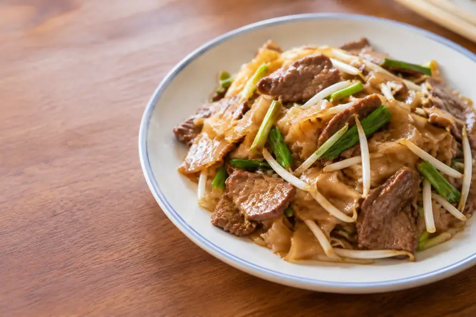

Staple主食 · Cantonese粤
Beef Chow Fun干炒牛河
Beef chow fun is the classic Cantonese test of wok control: intact silky rice noodles, tender beef, crisp bean sprouts and zero pooled oil or water on the plate. Because home burners are milder than restaurant woks, cold noodles easily stick, snap or steam into clumps. Warming and separating the ribbons first, cooking in quick stages and drizzling the soy sauce down the hot side of the wok delivers dry, smoky flavor at home.干炒牛河讲究「油润不腻、河粉不断、牛肉滑嫩、盘底无水」，最考验火候和手法。家里灶台火力不及餐厅，直接倒冷河粉下锅最容易黏底炒碎或炒出水；只要提前把河粉回软撕散、分步快炒，最后沿滚烫锅边淋酱油逼出焦香，就能在自家厨房炒出茶餐厅的干爽口感。

Ingredients食材
- Fresh wide rice noodles (ho fun)宽河粉（新鲜） 450 g · 1 package (about 450 g / 1 lb) fresh wide rice noodles1 袋鲜宽河粉（约 450 克 / 1 磅） if firm from the fridge, microwave 20 to 30 seconds before separating冷藏变硬时先微波 20–30 秒回软再撕开
- Striploin steak西冷牛排 250 g · about 250 g beef striploin or tenderloin, thinly sliced against the grain牛外脊或牛柳约 250 克，逆纹切薄片
- Mung bean sprouts绿豆芽 150 g · 150 g mung bean sprouts, rinsed and drained very dry绿豆芽 150 克，洗净彻底沥干
- Green onions大葱/小葱 80 g · about 80 g (6 to 8 stalks), cut into 5 cm lengths约 80 克（6–8 根），切 5 厘米长段
- Soy sauce生抽 45 g · 2.5 tbsp total (1 tbsp for beef, 1.5 tbsp for noodles)2.5 汤匙（1 汤匙腌肉，1.5 汤匙炒河粉）
- Dark soy sauce老抽 18 g · 1 tbsp (15 mL)1 汤匙（15 mL）
- Oyster sauce蚝油 18 g · 1 tbsp, for beef marinade1 汤匙（腌牛肉用）
- Shaoxing wine料酒(绍兴) 15 g · 1 tbsp (15 mL)1 汤匙（15 mL）
- Cornstarch玉米淀粉 6 g · 2 tsp, for beef marinade2 茶匙（腌牛肉用）
- Sugar白糖 4 g · 1 tsp total (1/2 tsp for beef, 1/2 tsp for noodles)1 茶匙（半茶匙腌肉，半茶匙调味）
- Sesame oil香油(芝麻油) 10 g · 2 tsp total (1 tsp for beef, 1 tsp to finish)2 茶匙（1 茶匙腌肉，1 茶匙出锅前）
- Canola oil菜籽油 49 g · 3.5 tbsp (about 52 mL), divided3.5 汤匙（约 52 mL，分次用）
Weights are as bought, before trimming or peeling. Costco pack sizes and availability vary; see each ingredient page.重量为买回来的原重（去皮去骨之前）。Costco 规格与有无随时变化，点食材名看详情。
Method做法
- Toss the sliced beef with 1 tbsp soy sauce, oyster sauce, cooking wine, cornstarch, 1/2 tsp sugar, 1 tsp sesame oil and 1 tbsp water until the liquid is absorbed.牛肉片加入 1 汤匙生抽、蚝油、料酒、淀粉、半茶匙白糖、1 茶匙香油和 1 汤匙清水抓匀至汁水吃进肉里。
- Coat the beef with 1 tsp canola oil to lock in moisture and let it marinate for 10 minutes.淋入 1 茶匙食用油拌匀封住水分，静置腌制 10 分钟。
- Separate the fresh rice noodles gently into single ribbons, microwaving them for 20 to 30 seconds first if stiff from the fridge.把鲜河粉轻轻撕成一条条不粘连，若冷藏过先微波 20 到 30 秒回软再撕。
- Stir the remaining 1.5 tbsp soy sauce, dark soy sauce and remaining 1/2 tsp sugar together in a small bowl.把剩下的 1.5 汤匙生抽、老抽和半茶匙白糖在小碗里拌匀备用。
- Heat 1 tbsp canola oil in a wok or large skillet over high heat until smoking. Spread the beef out without overlapping—cooking in two batches if the pan is crowded—and stir-fry each batch for 30 to 45 seconds until just browned on the outside and still slightly pink in the center, then transfer to a plate.炒锅或大平底锅烧热 1 汤匙油至冒烟，下牛肉片铺开但不要重叠（若锅不够大就分两批），大火每批快炒约 30 到 45 秒，至表面刚变色、中心仍略带粉红即盛出。
- Reheat the wok over high heat until very hot, add the remaining 1.5 to 2 tbsp canola oil, spread out the noodles and lift-toss gently with chopsticks and a spatula for 1 minute until hot and faintly blistered.空锅重新开大火充分烧热，倒入剩下的 1.5 到 2 汤匙食用油，铺入撕散的河粉，用筷子配锅铲轻挑翻炒 1 分钟至发烫微起泡。
- Drizzle the soy sauce mixture down the hot side of the wok and toss steadily with chopsticks for 45 seconds until the noodles are evenly coated in a glossy dark-brown sauce.沿滚烫锅边淋一圈酱汁，持续用筷子抖散拌炒 45 秒至河粉均匀裹上油亮酱色。
- Return the beef along with the dry bean sprouts and green onions, and toss over high heat for 30 to 45 seconds until the sprouts are just crisp-tender, the beef is just cooked through but still tender, and the bottom of the wok is dry.倒回牛肉，加入彻底沥干的豆芽和葱段，大火快速颠拌 30 到 45 秒，至豆芽刚断生、牛肉刚熟透且锅底无水。
- Turn off the heat, drizzle with the remaining 1 tsp sesame oil, toss once and serve immediately.关火淋入剩下的 1 茶匙香油拌匀，立刻出锅装盘。
Keys to success成功要点
- Never dump stiff, refrigerated rice noodles straight into the pan; warming them slightly relaxes the starch so the ribbons separate without snapping.千万不要把冷藏发硬的河粉直接倒进锅里，先微波回软并用手逐条撕开，炒的时候才不会一翻就断成碎渣。
- Use chopsticks alongside a wide spatula to lift and fold the noodles instead of scraping or pressing with a metal turner, which breaks fresh hor fun.用长筷子配合平铲向上「挑抖」河粉，比用铁铲来回推压更容易保留整条粉的完整度。
- Drain the bean sprouts thoroughly and add them only in the final step; pre-cooking them or adding wet sprouts releases water that turns the noodles soggy.豆芽一定要提前彻底沥干并在最后一步才下锅快炒，如果预先炒过或生豆芽带水下锅，受热出水就会把河粉闷软。
- Drizzling the soy mixture down the hot side of the wok flashes off excess water and caramelizes the sauce without creating salty dark clumps.酱油沿着热锅壁淋一圈能瞬间蒸发多余水分并焦化酱香，比直接浇在粉上更不易结块。
Common problems常见失败与补救
- The noodles stuck to the pan and broke into short scraps河粉全黏在锅底、炒成一坨碎粉
Usually from a lukewarm pan or stiff cold noodles. A large nonstick skillet is far more forgiving at home, and tossing with chopsticks prevents breakage.锅不够热或冷粉硬炒最容易粘碎；家里改用大号不粘平底锅容错率更高，全程用筷子挑抖别硬铲。 - Water or dark oil pooled on the plate盘底积了一层水或黑油
Usually caused by wet sprouts or too little heat. Push the ingredients to the sides and let the excess liquid evaporate over high heat for 20 to 30 seconds, then toss quickly; next time, drain the sprouts thoroughly and add them only at the very end.多因豆芽没沥干或河粉未炒透；当下可把食材拨到锅边，开大火让锅底汁水收干约 20–30 秒，再快速翻拌；下次务必把豆芽彻底沥干并在最后快炒出锅。 - Uneven color with pale strips and dark salty clumps河粉上色不匀，有的发白有的黑成一块
Pouring dark soy directly onto a pile stains unevenly. Premix the sauces with sugar in a bowl, drizzle down the hot side of the wok and toss quickly.老抽直接倒在一处会染黑局部；务必先在小碗调匀生抽老抽和糖，沿锅边淋入再快速抖散拌匀。
Watch it done视频参考
Made With Lau's beef chow fun, explained in English, about 12 minutes.Made With Lau 的乾炒牛河，英文讲解，约 12 分钟。
The title says it covers choosing and marinating the beef; about three minutes.标题写明讲牛肉的选择与炒前腌制，约 3 分钟。
Videos load only when you tap them (youtube-nocookie). Creators are credited; we do not host their videos.点了才加载视频（youtube-nocookie）。署名原作者，本站不托管视频。
Nutrition营养
| Energy热量 | 823 kcal |
| Protein蛋白质 | 32.4 g |
| Fat脂肪 | 45.9 g |
| of which saturated其中饱和脂肪 | 9.1 g |
| Carbohydrate碳水化合物 | 69 g |
| Fibre膳食纤维 | 4.8 g |
| Sodium钠 | 2139 mg |
High sodium钠偏高 Sodium tiers: under 345 mg lower, 345-689 mg moderate, 690 mg and above high (this site's tiers; 15% of the 2,300 mg daily reference = 345 mg).钠分档：低于 345 mg 较低，345–689 mg 中等，690 mg 及以上偏高（本站分档；345 mg ＝ 每日参考 2300 mg 的 15%）。
Computed from the Canadian Nutrient File (Health Canada) with the weights above; oil and sauces are counted in full. Real dishes differ.按加拿大营养素数据库和上面的重量计算；油和酱汁按全量计入，实际会略低。
Good to know适合 / 需注意
- About 32.4 g protein per serving, a protein-rich meal (adult reference intake roughly 50-60 g/day; needs vary).每份蛋白质约 32.4 g，属于蛋白质较高的一餐（成人每日参考量约 50–60 g，个体差异大）。
- About 2139 mg sodium per serving (about 93% of the 2,300 mg daily reference), on the high side; use less soy sauce or salt, and pair with unsalted sides.每份钠约 2139 mg（约占每日参考 2300 mg 的 93%），偏高；少放酱油或盐，或搭配无盐主食与蔬菜。
- About 9.1 g saturated fat per serving (daily reference about 20 g), on the high side; use a leaner cut or remove skin.每份饱和脂肪约 9.1 g（每日参考约 20 g），偏高；可换瘦肉部位或去皮。
- Contains allergens: Molluscs, Sesame, Soy, Wheat / gluten.含过敏原：贝类、芝麻、大豆、小麦/麸质。
Rice noodles provide the main carbohydrate alongside protein from the beef, while oil and sodium are fairly high and vegetables are light. Pair with blanched greens or a clear broth.河粉提供主要碳水化合物，牛肉补充蛋白质，整体用油与含钠量偏高而绿叶菜较少；搭配一盘白灼生菜或清汤会更均衡。